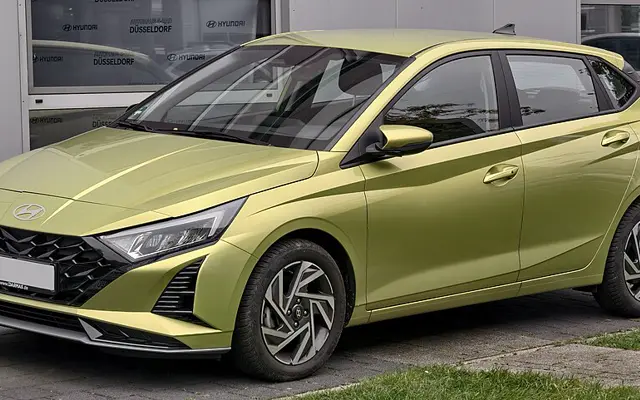

Par Motor › Precios por modelo › Hyundai i20
Precio de segunda mano · noviembre de 2026¿Cuánto vale un Hyundai i20 de segunda mano?

Precio justo estimado de un Hyundai i20 usado en España, año por año, con los kilómetros normales para su edad y en buen estado: de 3.700 € a 20.700 €. Para tasar el tuyo con sus kilómetros reales y su estado, usa el tasador gratis.
Precios del Hyundai i20 por año
i20 I (2008–2014)
Precio de nuevo: 1.2 78 CV, 11.500 € · 1.4 CRDi 90 CV, 14.500 € · 1.25 78 CV, 11.000 €
| Año | Km normales | 1.2 78 CV · Gasolina | 1.4 CRDi 90 CV · Diésel | 1.25 78 CV · Gasolina |
|---|---|---|---|---|
| 2014 | 100.000 km | 5.700 € | 7.100 € | 5.500 € |
| 2013 | 100.000 km | 5.400 € | 6.600 € | 5.200 € |
| 2012 | 100.000 km | 5.100 € | 6.200 € | 4.900 € |
| 2011 | 100.000 km | 4.800 € | 5.800 € | 4.600 € |
| 2010 | 100.000 km | 4.500 € | 5.500 € | 4.300 € |
| 2009 | 100.000 km | 4.200 € | 5.100 € | 4.000 € |
| 2008 | 100.000 km | 3.900 € | 4.800 € | 3.700 € |
i20 II (2014–2020)
Precio de nuevo: 1.2 84 CV, 13.500 € · 1.4 CRDi 90 CV, 17.000 € · 1.0 T-GDi 100 CV, 16.000 €
| Año | Km normales | 1.2 84 CV · Gasolina | 1.4 CRDi 90 CV · Diésel | 1.0 T-GDi 100 CV · Gasolina |
|---|---|---|---|---|
| 2020 | 95.000 km | 7.900 € | 10.200 € | 9.300 € |
| 2019 | 100.000 km | 7.400 € | 10.200 € | 8.800 € |
| 2018 | 100.000 km | 7.300 € | 10.100 € | 8.700 € |
| 2017 | 100.000 km | 7.200 € | 10.000 € | 8.500 € |
| 2016 | 100.000 km | 7.000 € | 9.400 € | 8.300 € |
| 2015 | 100.000 km | 6.900 € | 8.800 € | 8.200 € |
| 2014 | 100.000 km | 6.700 € | 8.300 € | 8.000 € |
i20 III (2020–hoy)
Precio de nuevo: 1.2 84 CV, 16.000 € · 1.0 T-GDi 100 CV, 18.000 € · 1.0 T-GDi 120 CV, 20.000 €
| Año | Km normales | 1.2 84 CV · Gasolina | 1.0 T-GDi 100 CV · Gasolina | 1.0 T-GDi 120 CV · Gasolina |
|---|---|---|---|---|
| 2026 | 5.000 km | 16.600 € | 18.700 € | 20.700 € |
| 2025 | 20.000 km | 14.300 € | 16.100 € | 17.900 € |
| 2024 | 35.000 km | 13.400 € | 15.100 € | 16.800 € |
| 2023 | 50.000 km | 12.600 € | 14.100 € | 15.700 € |
| 2022 | 65.000 km | 11.800 € | 13.300 € | 14.700 € |
| 2021 | 80.000 km | 10.600 € | 11.900 € | 13.300 € |
| 2020 | 95.000 km | 9.300 € | 10.500 € | 11.600 € |
Kilómetros normales: 15.000 al año en gasolina, híbridos y eléctricos, y 20.000 en diésel, con un máximo de 100.000 km (por encima no tasamos: el precio depende demasiado del historial de cada coche). Cifras redondeadas a 100 €.
Preguntas frecuentes
¿Cuánto vale un Hyundai i20 de segunda mano?
Según el año, la versión y los kilómetros, un Hyundai i20 usado vale hoy de 3.700 € a 20.700 € en España. El más barato de nuestra tabla es un 1.25 de 2008 (3.700 €) y el más caro un 1.0 T-GDi de 2026 (20.700 €). Son precios justos estimados entre particulares y profesionales, con los kilómetros normales para su edad y en buen estado.
¿Cuánto valor pierde un Hyundai i20 al año?
Con unos años encima, un Hyundai i20 pierde alrededor de un 6 % de su valor cada año (calculado sobre el 1.2 de la generación i20 III). Los primeros años la caída es mayor y a partir de los 70.000 km se acelera.
¿Qué motorizaciones tiene el Hyundai i20?
En nuestra base de datos hay versiones gasolina y diésel, en 3 generaciones: i20 I, i20 II y i20 III.
¿Cómo sé si me piden demasiado por un Hyundai i20?
Abre el tasador de Par Motor, elige el Hyundai i20, el año y los kilómetros reales, y escribe lo que te piden. Te diremos si está por debajo del precio justo (chollo) o por encima (caro). Es gratis y no pide registro ni matrícula.
Otros Hyundai
Compara su coste real
El precio de compra es solo una parte. Mira cuánto te costaría al mes con combustible, seguro, neumáticos, mantenimiento y lo que pierde de valor.
Abrir el comparador →